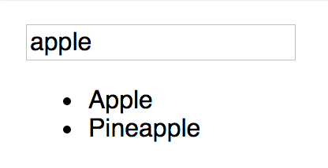
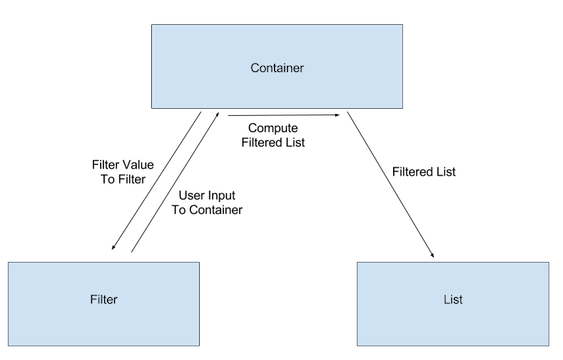

Unidirectional Data Flow
Let's start with a video:
So, in React applications, data usually flows from the top down. Why do we care? How does this apply?
When several components in a view need to share state, you lift, or "hoist", the state so that it's available to all the components that need it. Let's look at a search filter as an example. This app will have two basic components - one that displays a list of data, and one that captures user input to filter the data.
I do: Build a fruit filter
Our data will be simple - a list of fruits. The app will end up looking something like this:

When building a React app, it's important to take time to define the app's structure before you start writing code. I'm going to define the components and the state I need before I write the code.
Components
This app needs two components:
- A list component to display the list of fruit. This component needs one piece of data: the array of fruits to display.
- An input to capture the filter value from the user. This component needs one piece of data: the current value of the filter.
State
This app needs to keep track of changes in two items:
- The filtered list of fruits
- The value of the filter
Component hierarchy
I have two sibling components (components at the same level of the tree/app) that need to be aware of each other's data. Specifically, the list component needs to only show the fruits that match the filter value. So I need to get data from one sibling to another. Something like this:

How to achieve this, though? Using unidrectional data flow, of course! If I create a container component to hold both the filter value and the filtered list, I can hoist the state to the container so it's available to all the children. It will then be trivial to display it in the child components. The data will flow like this:

Child components
Now that I know the components I need, the state I need, and where everything needs to be, I can start writing some code. First, I'll create the child components. I can use Functional components, since they won't need to hold their own state.
const FruitList = props => (
<ul>
{props.fruits.map(fruit => <li>{fruit}</li>)}
</ul>
);
const FruitFilter = props => (
<div>
<label htmlFor="fruit-filter">Filter these Fruits: </label>
<input type="text" value={props.value} onChange={props.onChange} name="fruit-filter" />
</div>
);
FruitList renders an unordered list (ul) which contains an array of li elements, each with a single fruit string. FruitList uses array map to convert the array of fruit strings in our data to an array of fruit li elements to render. Using map to convert data arrays to arrays of UI elements is a common pattern you will use, and see used, in React.
FruitFilter renders a single input. Its value and onChange callbacks will both be set by the container component.
Container component
My container will be a class with a few methods I'll use to initialize and update the state of the two child components. In the constructor, I'll initialize the state:
constructor(props) {
super(props);
this.state = {
// initialize the fruit list to the full list passed in props
fruitsToDisplay: props.fruits,
// intialize the filter value to an empty string
filterValue: '',
};
}
I'll need a method to update the state when the filter value changes. This method will store the filter state, and filter the list of fruits to display. I'll pass this change handler to the filter component to react to user input.
handleFilterChange(event) {
event.preventDefault();
const filterValue = event.target.value;
this.setState((prevState, props) => {
// remove fruits that don't contain the filter value
const filteredFruitList = props.fruits.filter(fruit =>
fruit.toLocaleLowerCase().includes(filterValue.toLocaleLowerCase()));
// return new state with the filtered fruit list and the new value of the filter
return {
fruitsToDisplay: filteredFruitList,
filterValue,
};
})
}
Finally, I need to render my child components.
render() {
return (
<div>
<FruitFilter value={this.state.filterValue} onChange={this.handleFilterChange} />
<FruitList fruits={this.state.fruitsToDisplay} />
</div>
);
}
The full container component looks like this:
class FruitContainer extends Component {
constructor(props) {
super(props);
this.state = {
// initialize the fruit list to the full list passed in props
fruitsToDisplay: props.fruits,
// intialize the filter value to an empty string
filterValue: '',
};
// JavaScript cleanup: bind the context of our filterChange event handler (to have `this` to the context and handler we want)
this.handleFilterChange = this.handleFilterChange.bind(this);
}
handleFilterChange(event) {
event.preventDefault();
const filterValue = event.target.value;
this.setState((prevState, props) => {
// remove fruits that don't contain the filter value
const filteredFruitList = props.fruits.filter(fruit =>
fruit.toLocaleLowerCase().includes(filterValue.toLocaleLowerCase()));
// return new state with the filtered fruit list and the new value of the filter
return {
fruitsToDisplay: filteredFruitList,
filterValue,
};
})
}
render() {
return (
<div>
<FruitFilter value={this.state.filterValue} onChange={this.handleFilterChange} />
<FruitList fruits={this.state.fruitsToDisplay} />
</div>
);
}
}
All of the data is hoisted to the top of the tree in the container, and I pass it to the child components.
You do: Also display the fruits that do not match the filter
Once you have your data structured well, it's easier to add features to your applications or make changes to them. Because all of our data lives at the top of the tree, we can send it where we want. The full code for the fruit filter is available at this CodePen. Fork the CodePen and add a feature. Add another child component to the FruitContainer that displays the fruits that do not match the filter value (this should be all the items that are not in the fruitsToDisplay list).
Finally
It's important that you think through your applications before you start writing code. It's often helpful to sketch out your app, and identify the components you need, the state you need, and where that state needs to live. Use the unidirectional data flow pattern - hoist your state toward the top of the component tree so it's available to the children that need it.